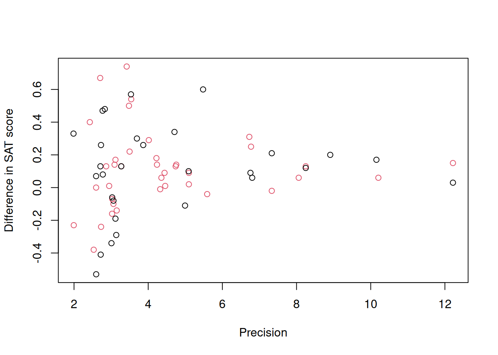
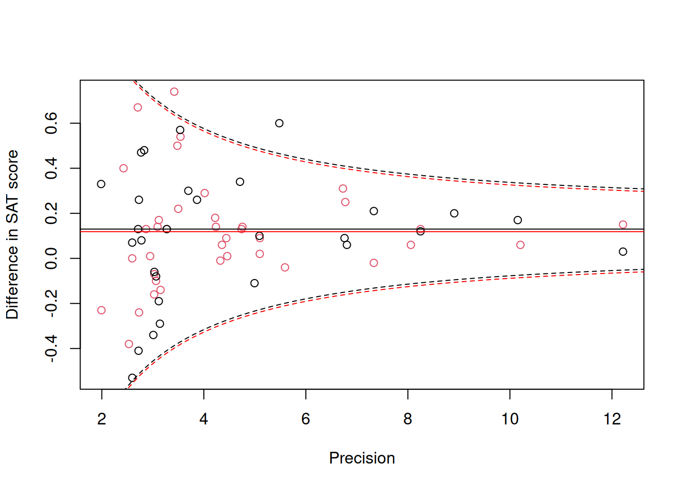
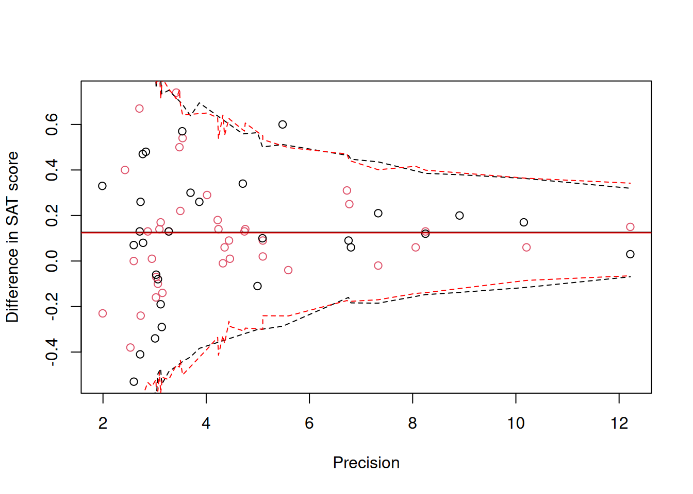
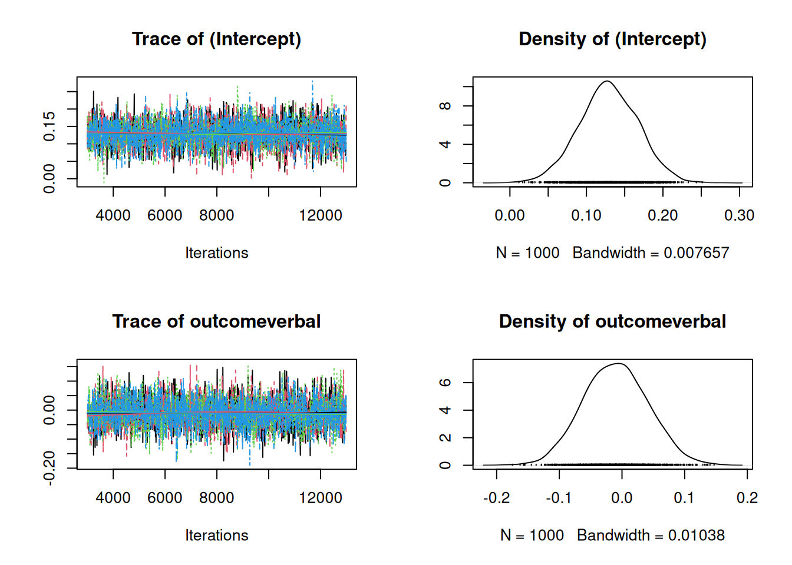
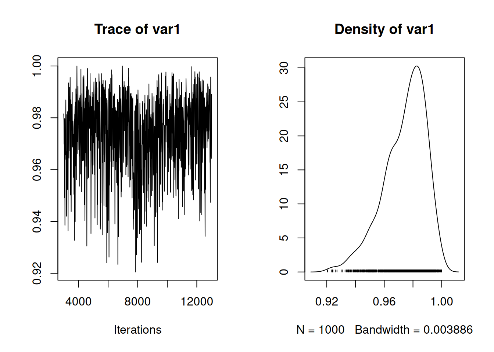

9 Measurement Error, Meta-analysis and Missing Values
Variables in the model may not be perfectly observed. In the worst case they are completely missing, but often we have some information about their possible or likely value. We may only know the interval in which the value lies, in which case the observation is said to be censored. In other cases, we have a ‘best’ estimate of the value, but this estimate comes with error. Handling incomplete information about an observation is relatively straightforward when the observation is a response variable since, but considerably more challenging when the observation is a predictor.
9.2 Censored response variables
A censored observation is not perfectly known, but we do know it lies between two possible values. If the lower possible value is not known we say we have left censoring and if the upper possible value is not known we say we have right censoring. When both the lower and upper possible values are known we have interval censoring. This terminology is not required when dealing with censoring in \(\texttt{MCMCglmm}\) - all that is required is specifying the lower and upper possible values. With left censoring we simply set the lower possible value to minus infinity and with right censoring we simply set the upper possible value to minus infinity. If the observation is perfectly observed we would make the lower and upper possible values equal, and if the observation is completely missing we set the lower and upper possible values to minus and plus infinity, respectively (or use \(\texttt{NA}\)). As an example, we will use the \(\texttt{IR_diabetes}\) data from the package \(\texttt{icenReg}\) which contains information about the time between the onset of diabetes and the development of diabetic nephropathy in 731 patients.
## left right gender
## 1 24 27 male
## 2 22 22 female
## 3 37 39 male
## 4 20 20 male
## 5 1 16 male
## 6 8 20 femaleThe columns \(\texttt{left}\) and \(\texttt{right}\) give the minimum and maximum amount of time per patient (units aren’t given, but I presume years). For the majority of patients (81%) the amount of time is known perfectly (for example the second patient) but for some patients the time is interval censored (for example the first patient). In \(\texttt{MCMCglmm}\) the lower and upper censoring points are passed using \(\texttt{cbind}\) and the chosen response is prefixed with \(\texttt{cen}\):
##
## Iterations = 3001:12991
## Thinning interval = 10
## Sample size = 1000
##
## DIC: 3876.685
##
## R-structure: ~units
##
## post.mean l-95% CI u-95% CI eff.samp
## units 38.34 34.45 42.24 1000
##
## Location effects: cbind(left, right) ~ gender
##
## post.mean l-95% CI u-95% CI eff.samp pMCMC
## (Intercept) 16.1266 15.4139 16.8657 1000 <0.001 ***
## gendermale 1.1932 0.2121 2.1080 1000 0.012 *
## ---
## Signif. codes: 0 '***' 0.001 '**' 0.01 '*' 0.05 '.' 0.1 ' ' 1Censoring is implemented for the Poisson, Gaussian and exponential distributions.
9.3 Meta-analysis and error in the response
In reality, the true value is never really known for continuous variables - there will always be some discrepancy between the true value and its measured value. Usually we ignore this, and indeed, if the magnitude of the discrepancies have constant probability over observations, there is little to be gained from worrying about it - these discrepancies become part of the residual and the assumption of homogeneity of variance will still hold. In some cases, however, the magnitude of the discrepancies may vary over observations. In such cases there is an advantage to modelling the discrepancies since it allows us to give more weight to observations that have smaller discrepancies. To leverage this information we first need to assume (or know) what distribution these discrepancies follow. In this section we will start by assuming the discrepancies are normally distributed. Second, we need to know (at least up to proportionality) the expected variance of the discrepancies for each observation, something I’ll refer to as the measurement error variance. The most common situation in which we have this information is when the observation is an estimate of some quantity and the measurement error variance is taken to be the standard error of the estimate squared. In such situations, the model is often referred to as a meta-analysis. To illustrate we will analyse data collected from studies looking at the effectiveness of coaching on the performance on the Scholastic Aptitude Test (SAT). The data are in \(\texttt{dat.kalaian1996}\) from the package \(\texttt{metadat}\):
## study year n1i n2i outcome yi vi
## 1 Alderman & Powers (A) 1980 28 22 verbal 0.22 0.0817
## 2 Alderman & Powers (B) 1980 39 40 verbal 0.09 0.0507
## 3 Alderman & Powers (C) 1980 22 17 verbal 0.14 0.1045
## 4 Alderman & Powers (D) 1980 48 43 verbal 0.14 0.0442
## 5 Alderman & Powers (E) 1980 25 74 verbal -0.01 0.0535
## 6 Alderman & Powers (F) 1980 37 35 verbal 0.14 0.0557We will focus on the variable \(\texttt{yi}\) which is the standardised mean difference in SAT scores between coached and uncoached students. The difference is standardised by the pooled standard deviation44 and positive values indicate the coached students have higher scores. 27 studies contribute one observation - either for the verbal or math subtest (indicated by \(\texttt{outcome}\)) whereas 20 studies contribute two observations, one for verbal and one for math. The variable \(\texttt{vi}\) is the standard error squared of this difference - the assumed measurement error variance. A plot of \(\texttt{yi}\) against the precision (\(1/\sqrt{\texttt{vi}}\)) is known as a funnel plot (Figure 9.1):

Figure 9.1: Standardised mean difference in SAT scores between coached and uncoached students on the y-axis against precision (\(1/\sqrt{\texttt{vi}}\)) on the x-axis. Back dots are for the math subtest and red dots for verbal subtest.
Funnel plots are so called because the response shows high variance when precision is low (measurement error variance is high) and teh variance declines as sample sizes and precision increases. There are two flavours of meta-analysis: fixed-effect meta-analysis, which assumes that all of the variability between estimates is due to measurement error and random-effect meta-analysis, which assumes that estimates may also vary for other reasons (and usually that this variability does not depend on precision). In the context of the funnel plot, the fixed-effect meta-analysis assumes that at high precision all estimates converge on the same value whereas the random-effect meta-analysis allows some variability to exist. Both types of meta-analysis can be fitted in \(\texttt{MCMCglmm}\), although to me at least, the plausibility of the assumptions that underpin fixed-effect meta-analysis seem dubious. I usually start with random-effect meta-analyses which actually converges on the fixed-effect meta-analysis as the residual (\(\texttt{units}\)) variance tends to zero.
There are multiple ways of setting up a (random-effect) meta-analysis in \(\texttt{MCMCglmm}\) (see Section 9.3.2). Here, I will go through the least intuitive method as it will provide the first step at understanding the next section. In Chapter 6 we explored random regression and in Section 6.2 we saw that random regression models also impose assumptions about how the variances changes as function of the covariate. If a random slope model is fitted without random intercepts the variance across levels of the random effect is \(\sigma^2_ux^2\) where \(x\) is the covariate. Consequently, fitting an observation-level random regression model with the standard error (\(\texttt{sqrt(vi)}\)) as \(x\) and fixing \(\sigma^2_u\) at one results in the variance being equal to the measurement error variance \(\texttt{vi}\) as required. The model formula idh(sqrt(vi)):units fits such a model and the associated variance can be fixed at one in the prior.
prior.meta<-list(R=IW(1, 0.002), G=list(G1=list(V=1, fix=1)))
m.meta<-MCMCglmm(yi~outcome, random=~idh(sqrt(vi)):units, data=dat.kalaian1996, prior=prior.meta)
summary(m.meta)##
## Iterations = 3001:12991
## Thinning interval = 10
## Sample size = 1000
##
## DIC: -185.792
##
## G-structure: ~idh(sqrt(vi)):units
##
## post.mean l-95% CI u-95% CI eff.samp
## sqrt(vi).units 1 1 1 0
##
## R-structure: ~units
##
## post.mean l-95% CI u-95% CI eff.samp
## units 0.002809 0.0002683 0.007807 254.9
##
## Location effects: yi ~ outcome
##
## post.mean l-95% CI u-95% CI eff.samp pMCMC
## (Intercept) 0.129039 0.056073 0.206326 850 <0.001 ***
## outcomeverbal -0.009728 -0.112622 0.088928 1000 0.862
## ---
## Signif. codes: 0 '***' 0.001 '**' 0.01 '*' 0.05 '.' 0.1 ' ' 1We can see that the standardised difference is positive - for math, the scores of coached students are on average 0.13 standard deviations higher, and the impact of coaching does not seem to be tremendously different for the verbal subtest. The residual (\(\texttt{units}\)) variance is small in comparison to the average measurement error variance (the average value of \(\texttt{vi}\) (\(\bar{\texttt{vi}}\)) is 0.081) - often this is expressed as \[I^2=\sigma^2_{units}/(\sigma^2_{units}+\bar{\texttt{vi}})\] the posterior mean of which is 0.033. In a fixed-effect meta-analysis, \(I^2=0\).
To the funnel plot in Figure 9.1 we can add the 95% prediction intervals for the difference in math scores (black) and verbal scores (red) (Figure 9.2).
![Standardised mean difference in SAT scores between coached and uncoached students on the y-axis against precision ($1/\sqrt{\texttt{vi}}$) on the x-axis. Back dots are for the math subtest and red dots for verbal subtest. The solid horizontal lines are the predicted means and the dashed lines are the 95% prediction intervals obtained using a variance of $\sigma^2_\texttt{units}+\texttt{vi}$. The solid grey line is the 95% prediction interval for the math subtest assuming $\sigma^2_\texttt{units}=0$.](_bookdown_files/fig/funnel2-1.png)
Figure 9.2: Standardised mean difference in SAT scores between coached and uncoached students on the y-axis against precision (\(1/\sqrt{\texttt{vi}}\)) on the x-axis. Back dots are for the math subtest and red dots for verbal subtest. The solid horizontal lines are the predicted means and the dashed lines are the 95% prediction intervals obtained using a variance of \(\sigma^2_\texttt{units}+\texttt{vi}\). The solid grey line is the 95% prediction interval for the math subtest assuming \(\sigma^2_\texttt{units}=0\).
The 95% prediction intervals suggest a problem - the observations look less variable than predicted when precision is high. With only 67 observations it is hard to be sure whether this couldn’t be just due to chance, but it is tempting to suggest a problem exists because a random-effect meta-analysis was used and the estimate of \(\sigma^2_\texttt{units}\) is somehow overestimated, perhaps because of an influential prior. However, the solid grey lines give the 95% prediction interval for the math subset (points in black) assuming \(\sigma^2_\texttt{units}=0\) and the interval is almost unchanged. In my experience, this type of type of problem is relatively common in meta-analyses. For this reason, I often test, rather than assume, that the measurement error variance is exactly proportional to that stated - rather than fix \(\sigma^2_{u}\) at one I allow it to be estimated.
prior.meta2<-list(R=IW(1, 0.002), G=F(1,1000))
m.meta2<-MCMCglmm(yi~outcome, random=~idh(sqrt(vi)):units, data=dat.kalaian1996, prior=prior.meta2)
summary(m.meta2)##
## Iterations = 3001:12991
## Thinning interval = 10
## Sample size = 1000
##
## DIC: -181.3425
##
## G-structure: ~idh(sqrt(vi)):units
##
## post.mean l-95% CI u-95% CI eff.samp
## sqrt(vi).units 0.7733 0.481 1.099 490.2
##
## R-structure: ~units
##
## post.mean l-95% CI u-95% CI eff.samp
## units 0.003449 0.0001677 0.01008 267.4
##
## Location effects: yi ~ outcome
##
## post.mean l-95% CI u-95% CI eff.samp pMCMC
## (Intercept) 0.12995 0.06866 0.20117 1000 <0.001 ***
## outcomeverbal -0.01122 -0.10607 0.07267 1000 0.846
## ---
## Signif. codes: 0 '***' 0.001 '**' 0.01 '*' 0.05 '.' 0.1 ' ' 1Although the best estimate suggests that the measurement error variance only scales with \(\texttt{vi}\) by a factor 0.773 rather than one (as assumed in the more standard model), the credible intervals do overlap one and the improvement in the diagnostic prediction interval plot is only marginal (Figure 9.3).

Figure 9.3: Standardised mean difference in SAT scores between coached and uncoached students on the y-axis against precision (\(1/\sqrt{\texttt{vi}}\)) on the x-axis. Back dots are for the math subtest and red dots for verbal subtest. The solid horizontal lines are the predicted means and the dashed lines are the 95% prediction intervals obtained using a variance of \(\sigma^2_\texttt{units}+\texttt{vi}\).
9.3.1 Exact meta-analysis
Another possible source of model misspecification is the assumption that the measurement errors are normally distributed with a standard deviation equal to the standard error of the estimate. This is true for linear model coefficients, including the difference in the means for two groups, but only when the assumption of normality is met and the residual variance is known perfectly. In practice, the residual variance is not known exactly and is estimated from the data. The assumed measurement error distribution is then only approximate, although if the individual studies have moderate sample sizes (\(>30\)) the approximation is accurate enough that it is not worth worrying about. Given 59 of the 67 differences in \(\texttt{dat.kalaian1996}\) were estimated from sample sizes in excess of 30, it seems unlikely that using a more accurate distribution for the measurement errors will dramatically change the model, but let’s try. Assuming the individual studies that contributed to \(\texttt{dat.kalaian1996}\) were normally distributed, the distribution of the estimated difference follows a mean-shifted scaled t-distribution with a mean equal to the true difference, a scale equal to the reported standard error (\(\sqrt{\texttt{vi}}\)) and degrees of freedom equal to the residual degrees of freedom. If we are prepared to assume no moderator variables were included when estimating the difference in the means the residual degrees of freedom will be equal to the sum of the sample sizes in each group minus two:
However, the differences in \(\texttt{dat.kalaian1996}\) (\(\texttt{yi}\)) are not raw differences, but have been standardised by the within group standard deviation. After standard-deviation standardisation the distribution of estimates is no longer a mean-shifted scaled t-distribution but a noncentral scaled t-distribution. The true (standardised) value is equal to the noncentrality parameter, and the scale and degrees of freedom are equal to the reported standard error and residual degrees of freedom from the model. When the true value is non-zero the distribution of errors will be asymmetric with a longer tail to the right when the true value is positive. When the true value is zero we have the standard scaled t-distribution which compared to the normal has longer tails. As the degrees of freedom increases the noncentral scaled t-distribution converges on the normal. \(\texttt{MCMCglmm}\) allows the response to come from a noncentral scaled t-distribution (family="ncst") if the scale and degrees of freedom are known and the linear model predicts the noncentrality parameter. When using family="ncst" three columns are expected: the estimate, it’s standard error and the residual degrees of freedom. Note that for such models, the meausrement errors are built into the distribution and do not need to be modelled using random effects:
m.meta3<-MCMCglmm(cbind(yi, sqrt(vi), df)~outcome, data=dat.kalaian1996, prior=list(R=list(V=1, nu=0.002)), family="ncst")
summary(m.meta3)##
## Iterations = 3001:12991
## Thinning interval = 10
## Sample size = 1000
##
## DIC: -8.503967
##
## R-structure: ~units
##
## post.mean l-95% CI u-95% CI eff.samp
## units 0.00219 0.0001578 0.006151 121.1
##
## Location effects: cbind(yi, sqrt(vi), df) ~ outcome
##
## post.mean l-95% CI u-95% CI eff.samp pMCMC
## (Intercept) 0.128878 0.057199 0.195495 85.04 <0.001 ***
## outcomeverbal -0.007312 -0.094338 0.094081 77.52 0.9
## ---
## Signif. codes: 0 '***' 0.001 '**' 0.01 '*' 0.05 '.' 0.1 ' ' 1The posterior distributions of the parameters are almost identical to those seen with the standard model (m.meta), as expected given the high sample sizes. Obtaining the prediction intervals is a little tricky with respect to the precision is a little tricky, since for a given precision the residual degrees of freedom might vary. Moreover the response is now assumed to be the sum of a normally distributed \(\textttt{unit}\) effect and a noncentral scaled \(t\) effect and so the quantiles of the distribution are unknown. We can of course obtain posterior predictive intervals for our observed data and overly them, and as expected it is very similar to Figure 9.2.

Figure 9.4: Standardised mean difference in SAT scores between coached and uncoached students on the y-axis against precision (\(1/\sqrt{\texttt{vi}}\)) on the x-axis. Back dots are for the math subtest and red dots for verbal subtest. The solid horizontal lines are the predicted means and the dashed lines are the 95% prediction intervals obtained assuming the response follows a noncentral scaled t-distribution.
It is always a little annoying when standardised values are published without the accompanying raw values or the values used to standardise. Particularly so, when the case for standardisation seems to be misplaced: I bet coaching companies don’t have statements on their websites saying they raise SAT grades by \(x\) standard deviations - they will say they raise them by \(x\) points (a raw difference) or by \(x\) percent (a mean standardised difference). If raw differences and their standard errors had been reported an exact meta-analysis on the raw differences could have been performed by specifying the response to be a mean-shifted scaled t-distribution ( family = "msst"). As with the noncentral scaled \(t\)-distribution, three columns are expected: the estimate followed by its standard error and the residual degrees of freedom.
9.3.2 \(\texttt{mev}\), \(\texttt{units}\) structure and \(\texttt{ginverse}\)
When fitting a standard meta-analysis (\(\texttt{m.meta}\)) we set the problem up as a random regression using \(\texttt{idh(sqrt(vi)):units}\) and fixed the corresponding variance at one. There are at least three other ways to achieve the same goal.
\({\bf \texttt{mev}}\): The argument in $ takes a vector of measurement error variances
m.mev<-MCMCglmm(yi~outcome, data=dat.kalaian1996, mev=dat.kalaian1996$vi, prior=list(R=IW(1, 0.002)))\({\bf \texttt{units} \textrm{structure}}\): A \(\texttt{units}\) by \(\texttt{units}\) measurement error covariance matrix can be specified in the random formula and then fixed in the prior. In standard meta-analysis the measurement errors on different observations are uncorrelated and so the covariance matrix is diagonal and can be fitted using an \(\texttt{idh}\) structure. While this is much more computationally efficient than fitting an equivalent \(\texttt{us}\) structure, it may still be slow if the data set is large:
prior.units<-list(R=IW(1, 0.002), G=list(G1=list(V=diag(dat.kalaian1996$vi), fix=1)))
m.idh<-MCMCglmm(yi~outcome, random=~idh(units):units, data=dat.kalaian1996, prior=prior.units)\({\bf \texttt{ginverse}}\): A \(\texttt{units}\) by \(\texttt{units}\) measurement error covariance matrix can be specified through the \(\texttt{ginverse}\) argument to \(\texttt{MCMCglmm}\). Conceptually this is equivalent to the specification above, but computationally more efficient.
ivi<-as(Diagonal(nrow(dat.kalaian1996), 1/dat.kalaian1996$vi), "CsparseMatrix")
rownames(ivi)<-dat.kalaian1996$id
prior.ginv<-list(R=IW(1, 0.002), G=list(G1=list(V=1, fix=1)))
m.ginv<-MCMCglmm(yi~outcome, random=~id, data=dat.kalaian1996, prior=prior.ginv, ginverse=list(id=ivi))All of the above models are equivalent to the first model used (\(\texttt{m.meta}\)).

9.3.3 Multivariate meta-analysis
In some cases measurement errors may be correlated across observations. For example, in \(\texttt{dat.kalaian1996}\), 20 studies contributed two differences, one for verbal and one for math subtests. The pair of differences were calculated from data on the same set of students and so we might expect their estimation error to be correlated - for example, if the coached students for a particular study happened to be intrinsically poor students we might expect the two differences to be smaller than their expectation. In some cases, we might know the measurement error correlation between observations (for example, if we were to analyses pairs of coefficients obtained from linear models) but often - as here - we do not. The help file for \(\texttt{dat.kalaian1996}\) performs an analysis where the measurement error correlation between observations from the same study is assumed to be 0.66. We can impose this assumption in a \(\texttt{MCMCglmm}\) model by forming the inverse measurement error covariance matrix as we did in the previous section. Formatting the matrix is a bit painful and so I’ll hide the details
here
inverse.cor<-function(v, r){
R<-matrix(r, length(v), length(v))
diag(R)<-1
# create the correlation matrix
V<-crossprod(t(sqrt(v)))
# create the covariance matrix had r been 1.
return(solve(V*R))
}
# a function for creating an inverse covariance matrix given the variances (v) and a constant correlation (r)
ivi<-tapply(dat.kalaian1996$vi, dat.kalaian1996$study, inverse.cor, r=0.66)
# for each study create the inverse measurement error covariance matrix
ivi<-bdiag(ivi)
# turn the list of matrices into a sparse block diagonal
idx.after.sort <- order(dat.kalaian1996$study, seq_along(dat.kalaian1996$study))
# for situations where observations aren't ordered (within studies in this example)
# need to make sure rows/columns of ivi correspond to the correct obseravtions
rownames(ivi)<-dat.kalaian1996$id[idx.after.sort]
but it is instructive to look at the output. For example, if we look at row/columns 60 to 63 of the inverse (stored as \(\texttt{ivi}\)) we get
## 4 x 4 sparse Matrix of class "dsCMatrix"
## 29 65 41 42
## 29 7.674597 . . .
## 65 . 5.885815 . .
## 41 . . 46.02060 -29.76147
## 42 . . -29.76147 44.18437This matrix corresponds to observations with \(\texttt{id}\)’s 29, 65, 41 and 42:
## id study vi
## 29 29 Roberts & Oppenheim (N) 0.1303
## 65 65 Teague 0.1699
## 41 41 Whitla 0.0385
## 42 42 Whitla 0.0401The first two studies only contributed one observation and so their rows/columns only have a diagonal element equal to 1/\(\texttt{vi}\). The final two observations are from the same study and so the inverse has a non-zero element in the off-diagonal. As in the previous section we can simply fit this as a ginverse with the associated variance fixed at one:
prior.meta3<-list(R=IW(1, 0.002), G=list(G1=list(V=1, fix=1)))
m.meta3<-MCMCglmm(yi~outcome, random=~id, data=dat.kalaian1996, ginverse=list(id=ivi), prior=prior.meta3)
summary(m.meta3)##
## Iterations = 3001:12991
## Thinning interval = 10
## Sample size = 1000
##
## DIC: -107.6008
##
## G-structure: ~id
##
## post.mean l-95% CI u-95% CI eff.samp
## id 1 1 1 0
##
## R-structure: ~units
##
## post.mean l-95% CI u-95% CI eff.samp
## units 0.007692 0.0006589 0.01684 278.3
##
## Location effects: yi ~ outcome
##
## post.mean l-95% CI u-95% CI eff.samp pMCMC
## (Intercept) 0.13684 0.05972 0.21299 1000 <0.001 ***
## outcomeverbal -0.01841 -0.10029 0.06581 1000 0.626
## ---
## Signif. codes: 0 '***' 0.001 '**' 0.01 '*' 0.05 '.' 0.1 ' ' 1An equivalent way to fit this model is to allow the pair of random slopes from our standard model to be correlated when they come from the same study, and fix the correlation at 0.6645:
V<-matrix(0.66, 2, 2)
diag(V)<-1
prior.meta4<-list(R=IW(1, 0.002), G=list(G1=list(V=V, fix=1)))
m.meta4<-MCMCglmm(yi~outcome, random=~us(outcome:sqrt(vi)):study, data=dat.kalaian1996, prior=prior.meta4)
summary(m.meta4)##
## Iterations = 3001:12991
## Thinning interval = 10
## Sample size = 1000
##
## DIC: -108.0545
##
## G-structure: ~us(outcome:sqrt(vi)):study
##
## post.mean l-95% CI u-95% CI
## outcomemath:sqrt(vi):outcomemath:sqrt(vi).study 1.00 1.00 1.00
## outcomeverbal:sqrt(vi):outcomemath:sqrt(vi).study 0.66 0.66 0.66
## outcomemath:sqrt(vi):outcomeverbal:sqrt(vi).study 0.66 0.66 0.66
## outcomeverbal:sqrt(vi):outcomeverbal:sqrt(vi).study 1.00 1.00 1.00
## eff.samp
## outcomemath:sqrt(vi):outcomemath:sqrt(vi).study 0
## outcomeverbal:sqrt(vi):outcomemath:sqrt(vi).study 0
## outcomemath:sqrt(vi):outcomeverbal:sqrt(vi).study 0
## outcomeverbal:sqrt(vi):outcomeverbal:sqrt(vi).study 0
##
## R-structure: ~units
##
## post.mean l-95% CI u-95% CI eff.samp
## units 0.007759 0.0007515 0.01771 418.2
##
## Location effects: yi ~ outcome
##
## post.mean l-95% CI u-95% CI eff.samp pMCMC
## (Intercept) 0.13831 0.05480 0.21404 1000 <0.001 ***
## outcomeverbal -0.02001 -0.10931 0.05660 1000 0.64
## ---
## Signif. codes: 0 '***' 0.001 '**' 0.01 '*' 0.05 '.' 0.1 ' ' 1It’s not clear where the value 0.66 comes from, and in fact rather than fixing the correlation to be 0.66 we could try to estimate it. This can be achieved by replacing the \(\texttt{us}\) variance structure with a \(\texttt{corg}\) variance structure. This fixes the diagonal elements of the covariance matrix to one, but allows the correlation to be estimated. For a \(2\times 2\) correlation matrix, specifying the off-diagonal elements of $ to be zero and having \(\texttt{nu=1}\) results in a flat prior for the correlation (Section 5.3.2).
prior.meta5<-list(R=IW(1, 0.002), G=list(G1=list(V=diag(2), nu=1)))
m.meta5<-MCMCglmm(yi~outcome, random=~corg(outcome:sqrt(vi)):study, data=dat.kalaian1996, prior=prior.meta5)
summary(m.meta5)##
## Iterations = 3001:12991
## Thinning interval = 10
## Sample size = 1000
##
## DIC: -182.0488
##
## G-structure: ~corg(outcome:sqrt(vi)):study
##
## post.mean l-95% CI u-95% CI
## outcomemath:sqrt(vi):outcomemath:sqrt(vi).study 1.0000 1.0000 1.0000
## outcomeverbal:sqrt(vi):outcomemath:sqrt(vi).study 0.1056 -0.3279 0.5128
## outcomemath:sqrt(vi):outcomeverbal:sqrt(vi).study 0.1056 -0.3279 0.5128
## outcomeverbal:sqrt(vi):outcomeverbal:sqrt(vi).study 1.0000 1.0000 1.0000
## eff.samp
## outcomemath:sqrt(vi):outcomemath:sqrt(vi).study 0
## outcomeverbal:sqrt(vi):outcomemath:sqrt(vi).study 1000
## outcomemath:sqrt(vi):outcomeverbal:sqrt(vi).study 1000
## outcomeverbal:sqrt(vi):outcomeverbal:sqrt(vi).study 0
##
## R-structure: ~units
##
## post.mean l-95% CI u-95% CI eff.samp
## units 0.003067 0.0001518 0.008255 279.1
##
## Location effects: yi ~ outcome
##
## post.mean l-95% CI u-95% CI eff.samp pMCMC
## (Intercept) 0.129378 0.059329 0.197668 1000 <0.001 ***
## outcomeverbal -0.009422 -0.100556 0.089569 1000 0.836
## ---
## Signif. codes: 0 '***' 0.001 '**' 0.01 '*' 0.05 '.' 0.1 ' ' 1The credible intervals on the correlation are very wide (-0.328 – 0.513) but it does seem like the value of 0.66 assumed in model \(\texttt{m.meta4}\) is unjustifiably high.
9.4 Interval Data
In the meta-analyses covered in Section 9.3 we worked with the measurement error variance associated with an estimate. If only confidence/credible intervals are given for an estimate, it is possible to obtain the measurement error variance assuming a distribution for the errors. For example, if the distribution is normal and the lower and upper interval are \(l\) and \(u\) respectively, then the estimate would be the midpoint \(y=(l+u)/2\) and the measurement error standard deviation would be
\[\sigma_m = \frac{u-l}{2Q(1-\alpha/2)}\]
where \(Q\) is the quantile function of the unit normal (\(\texttt{qnorm}\)) and \(\alpha\) is one minus the confidence level (e.g. 0.05 for 95% confidence intervals).
In some cases, intervals are given but without the corresponding confidence level. For example, in (Phillimore.2016?) we analysed citizen-science data on when birds lay their eggs. Exact dates are not known and only an interval is given. The standard way of treating such data is to treat them as censored. Censoring assumes that before model building, the probability density for the true value is flat across the interval. However, for the laying date data quite a lot of information goes into calculating the interval such that the true value is more likely to be close to the centre of the interval. In addition, the intervals are calculated in the hope they are comparable between observations - two observations may have very different interval lengths, but it is still hoped that the probability the true value lies inside the interval is the same in both cases. In such cases, \(\alpha\) and therefore \(2Q(1-\alpha/2)\) is constant. In Section 9.3 we fitted a model (\(\texttt{m.meta2}\)) which allowed the measurement error variance to be proportional to, rather than exactly equal to, the reported measurement error variance (\(\texttt{vi}\)). The constant of proportionality could be estimated since \(\texttt{vi}\) varied and the empirical change in variance with \(\texttt{vi}\) could be assessed. Analysing interval data46 is essentially the same problem: we can treat \(y\) as the observation and \((l-u)^2\) as \(\texttt{vi}\). The estimate of the constant of proportionality, \(c\), is then equal to \((1/2Q(1-\alpha/2))^{2}\) and so we can obtain an estimate of the unknown confidence interval as \(1-\alpha = 2F(1/2\sqrt{c})-1\), where \(F\) is the cumulative distribution function of the unit normal (\(\texttt{pnorm}\)).
For we can obtain the 95% (\(\alpha=0.05\)) confidence intervals from \(\texttt{vi}\):
dat.kalaian1996$l<-qnorm(0.025, dat.kalaian1996$yi, sqrt(dat.kalaian1996$vi))
dat.kalaian1996$u<-qnorm(0.975, dat.kalaian1996$yi, sqrt(dat.kalaian1996$vi))prior.meta6<-list(R=IW(1, 0.002), G=F(1,1000))
m.meta6<-MCMCglmm(yi~outcome, random=~idh(I(u-l)):units, data=dat.kalaian1996, prior=prior.meta2)
summary(m.meta6)##
## Iterations = 3001:12991
## Thinning interval = 10
## Sample size = 1000
##
## DIC: -181.8545
##
## G-structure: ~idh(I(u - l)):units
##
## post.mean l-95% CI u-95% CI eff.samp
## I(u - l).units 0.04933 0.02968 0.06946 502.1
##
## R-structure: ~units
##
## post.mean l-95% CI u-95% CI eff.samp
## units 0.003973 0.0002097 0.01247 210.2
##
## Location effects: yi ~ outcome
##
## post.mean l-95% CI u-95% CI eff.samp pMCMC
## (Intercept) 0.13005 0.06348 0.20410 1000 <0.001 ***
## outcomeverbal -0.01292 -0.10285 0.08485 1000 0.788
## ---
## Signif. codes: 0 '***' 0.001 '**' 0.01 '*' 0.05 '.' 0.1 ' ' 1Given an \(\alpha\) of 0.05 we expect the estimated variance to be $(1/2Q(1-/2))^{2}=0.065 and we can see the best estimate is lower than this although the credible intervals overlap 0.065. The best estimate of the confidence level can also be obtained:

and we can see that 0.95 has some support but much of the posterior density is above this and the posterior mean is 0.974. As we saw from model \(\texttt{m.meta2}\), the best estimate is that the measurement error variance scales by a factor 0.773 with the reported measurement error variance, \(\texttt{vi}\). Since the reported measurement error variance may be inflated the assumed confidence level may have been deflated and the actual level may exceed 95%.
9.5 Error in the predictors
Since the object of an analysis is to model the response, accommodating missing values or error in the response is relatively straightforward - we’ve already done the hard work of thinking about how the response may be distributed. On the other hand, we generally condition on the predictor variables in a GLMM and while we must consider how the response depends on them, we do not need to consider their distribution. However, when we need to accommodating missing values or error in predictor variables we have little option but to consider how their true values and errors might be distributed. We can do this formally by fitting a multi-response variable where the would-be predictor is treated as a response variable and a shared parameter exists that links the predictor variable with the target response variable. However, this is only really feasible when we have one or few such predictor variables. Alternatively, we can use more heuristic approaches that impute true values using an approximate distribution. Before addressing each in turn it will be necessary to draw a distinction between two types of error - classical and Berkson.
9.5.1 Classical and Berkson errors.
To understand the distinction between classical and Berkson errors, imagine a predictor variable \(x\) for which we can only observe \(\hat{x}\). With classical errors, \(\hat{x}\) is distributed around \(x\) with some error: \(\hat{x} = x+e_c\). With Berkson errors, \(x\) is distributed around \(\hat{x}\) with some deviation: \(x = \hat{x}+e_b\). The subtle difference between the two types of error is best understood in terms of an example. Imagine, I wanted to assess the impact of smoking on health and so I recruit two groups of patients. Patients in Group A smoke ten ten cigarettes a day and patients in Group B smoke twenty cigarettes a day. However, rather than using 10 and 20 as my predictor values, I use the number of cigarettes each patient tells me they smoked, and they have fallible memories. Here we have classical errors: the true value (\(x\)) is either 10 or 20 but my observed values (\({\hat x}\)) vary around this due to bad memory: \(Var({\hat x})>Var(x)\). Another possibility is that I tell patients in Group A to smoke ten ten cigarettes a day and patients in Group B to smoke twenty cigarettes a day. However, although patients in the two groups on average smoke 10 or 20 cigarettes each patient may smoke slightly more or less than the average. However, I am not party to this information and the true number of cigarettes smoked (\(x\)) deviates from my predictor variable \({\hat x}\) by an unknown amount. Here we have Berkson errors and \(Var({\hat x})<Var(x)\). With classical errors, \(e_c\) does not affect the response: \(e_c=1\) implies that I thought I smoked 11 (or 21) cigarettes when in fact I only smoked 10 (or 20) - this imaginary cigarette will not impact my health. With Berkson errors, \(e_b\) does affect the response: \(e_b=1\) implies that I smoked one more cigarette than I was told to and this very real cigarette may well impact my health. The consequence of this is that if I use \(\hat{x}\) as a predictor in a regression the estimated coefficient will be biased towards zero (attenuated) with classical errors but unbiased with Berkson errors. To see this, note that in both cases the causal model is \(y = \beta x+e\) and the regression coefficient that we would expect to obtain had we measured \(x\) perfectly would be \(E[\hat{\beta}] = \beta =Cov(y,x)/Var(x)\). With classical error \(Cov(y, x+e_c)=Cov(y,x)\) since \(e_c\) does not affect the response. However, \(Var(x+e_c)=Var(x)+Var(e_c)\) and so the regression is downwardly biased:
\[E_c[\hat{\beta}] = \frac{Cov(y,x)}{Var(x)+Var(e_c)}= \beta\frac{Var(x)}{Var(x)+Var(e_c)}\]
The estimated regression coefficient is equal to the true coefficient multiplied by the repeatability of the measurements. Since the repeatability lies between zero and one the estimate is attenuated.
With Berkson error, the causal model \(y = \beta x+e\) results in \(y = \beta(\hat{x}+e_b)+e\) and so the covariance between \(y\) and \(\hat{x}\) is \(\beta Var(\hat{x})\) and the estimated regression will be:
\[E_b[\hat{\beta}] = \frac{\beta Var(\hat{x})}{Var(\hat{x})}=\beta\]
The effects of the extra or fewer cigarettes smoked will appear in the residuals and the residual variance will be estimated as \(\beta^2Var(e_b)+Var(e)\). As in meta-analysis, if the magnitude of \(e_b\) varies over patients and we have information about this - for example, we monitor a subset of patients carefully and we know exactly how many cigarettes they smoked - then modelling the Berkson errors can increase the precision of the estimate.
To obtain the pooled standard deviation a weighted variance needs to be calculated. For two groups, the weighted variance is \(\frac{w_1\widehat{\sigma^2_1}+w_2\widehat{\sigma^2_2}}{w_1+w_2}\) where the \(\widehat{\sigma^2}\) are estimates of the variance within each group. The weights are typically the sample size for each group minus one. The pooled standard deviation is the square root of the weighted variance and is the best estimate of the standard deviation under the assumption that it is the same in the two groups.↩︎
It might not be clear why this works. In our standard meta-analysis model we used the random formula \(\texttt{idh(sqrt(vi)):units}\). As was covered in Chapters 5 and 6, the term inside the variance function, in this case \(\texttt{sqrt(vi)}\), should be treated as a model formula with the intercept removed. The model term therefore determines a slope parameter for the covariate \(\sqrt{\texttt{vi}}\). This slope parameter is allowed to vary across levels of the predictor that is interacted with the variance structure, in this case \(\texttt{units}\). Since each observation is associated with a unique level of \(\texttt{units}\) the random effect model prediction for observation \(i\) is \(\sqrt{\texttt{vi}_i}u_{i}\). The marginal distribution of \(\sqrt{\texttt{vi}_i}u_{i}\) is normal with zero mean and variance \(\texttt{vi}_i\sigma^2_u\). Setting \(\sigma^2_u=1\), the marginal distribution for the measurement error associated with observation \(i\) is normal with zero mean and variance \(\texttt{vi}_i\), as desired.
In the multivariate meta-analysis model we used the random formula \(\texttt{us(outcome:sqrt(vi)):study}\). Since \(\texttt{outcome}\) has two levels, the term inside the variance function, \(\texttt{outcome:sqrt(vi)}\), defines two parameters: a slope for \(\texttt{math}\) and a slope for \(\texttt{verbal}\). These slopes are allowed to vary across studies since \(\texttt{study}\) is interacted with the variance function. Consequently, for each study there are two slopes. These slopes are allowed to covary since a \(\texttt{us}\) structure was used. Imagine observations \(k\) and \(l\) are the \(\texttt{math}\) and \(\texttt{verbal}\) scores from study \(j\). If we designate the slopes for study \(j\) as \(u^{(\texttt{math})}_j\) and \(u^{(\texttt{verbal})}_j\), the random effect model prediction for observations \(k\) and \(l\) are \(u^{(\texttt{math})}_j\sqrt{\texttt{vi}_k}\) and \(u^{(\texttt{verbal})}_j\sqrt{\texttt{vi}_l}\). The marginal variances of these two predictions are \(\sigma^2_\texttt{math}\texttt{vi}_k\) and \(\sigma^2_\texttt{verbal}\texttt{vi}_l\), respectively. If \(\sigma^2_\texttt{math}\) and \(\sigma^2_\texttt{verbal}\) are set to one, each observation has the desired distribution for its measurement error, as in the univariate model. The marginal covariance between the observations is \(\sigma_{\texttt{math},\texttt{verbal}}\sqrt{\texttt{vi}_k}\sqrt{\texttt{vi}_l}\), and with \(\sigma^2_\texttt{math}=\sigma^2_\texttt{verbal}=1\) the marginal correlation is \(\sigma_{\texttt{math},\texttt{verbal}}\). Consequently, fixing the variances of the slopes to one, and their covariance to 0.66, gives the desired model. We can also set \(\sigma^2_\texttt{math}=\sigma^2_\texttt{verbal}=1\) but allow the correlation, \(\sigma_{\texttt{math},\texttt{verbal}}\), to be estimated, as was done in model \(\texttt{m.meta5}\)↩︎
I’m not aware of a name for data like this so I just made one up. If anyone knows of a term already in use for such data please let me know.↩︎